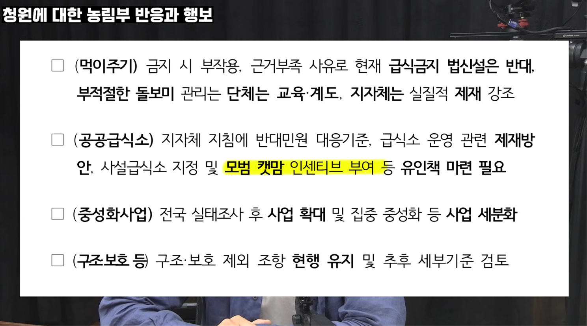

유튜브 썸네일
역시 이길 수가 없는 싸움이었지..
는 구라 ㅋㅋㅋㅋㅋㅋㅋㅋ
그와중에 농림부에서 새덕후 청원(길고양이 먹이주기 금지 및 관리체계 개선요구)에 대해서 검토를 한다고 비밀리에 새덕후 빼고(?) 비공개 간담회를 열었는데..

모범 캣맘 인세티브 부여 ㅋㅋㅋㅋㅋㅋㅋㅋㅋㅋㅋㅋㅋ
이제 나랏돈 받을 수도 있는 캣맘 건들 자신 있음?
출처
유튜브 썸네일
역시 이길 수가 없는 싸움이었지..
는 구라 ㅋㅋㅋㅋㅋㅋㅋㅋ
그와중에 농림부에서 새덕후 청원(길고양이 먹이주기 금지 및 관리체계 개선요구)에 대해서 검토를 한다고 비밀리에 새덕후 빼고(?) 비공개 간담회를 열었는데..

모범 캣맘 인세티브 부여 ㅋㅋㅋㅋㅋㅋㅋㅋㅋㅋㅋㅋㅋ
이제 나랏돈 받을 수도 있는 캣맘 건들 자신 있음?
출처
나는 그래서 비둘기맘 쥐맘 하기로함
비둘기 모이뿌리고 참치통조림 흩뿌리고 다니려고
보아하니 제정신 같은데, 그걸 어떻게 합니까
캣맘 자체가 폐급인간을 지칭하는 단어인데 모범이 어디있냐 ㅋㅋㅋㅋㅋㅋㅋㅋㅋㅋㅋㅋㅋㅋㅋㅋㅋㅋㅋ
모범캣맘은 진짜 듣도보도 못한 발상이다
ㅋㅋㅋㅋ 진짜 기본소득 실현하려고 이것저것 다 건드는거여? 나중엔 한달 동안 무단횡단 안하면 만원 주고, 만보기 만보 달성하면 5000원 주고 그러겠다
모범캣맘은 무슨 캣맘임? 고양이를 집에 데려가서 키우면 거기서 부턴 캣맘이 아니고 무턱대고 막 대려오면 애니멀 호더고 ㅋㅋ
본인 집 앞 본인 사유지에서 길거리 고양이들 밥 주면 모범 캣맘인가?
난 지금 기르는 고양이들 진짜로 밥주면서 래포쌓은 후 집에 데려오고, 아픈애 구조해서 치료 마친 뒤 내가 키우고 있음.
난 모범 집사 맞지?
무슨무슨 아파트 캣맘한테 책임감 씌우기가 오버랩되네
캣맘은 진짜 한명도 안빠지고 정신병자다.. 그냥 무시하는게 낫다 칼찌당할수도있늠
슬슬 선넘네 나라에서조차 저 지랄 하면 나는 그냥 쥐맘 할란다 사료 존나 뿌리고 다녀야지 시청앞에
놀랍게도 프랑스의 사례를 생각해보면 쥐맘도 생겨날 가능성 있음
미친건가? 캣맘에 모범이란 말이 같이 쓰일 수 있냐?
왜 고양이만 급식소 설치가 디폴트옵션인건데?? 유해조수 지정하라고 씨바
하 씨발 나라 행정 굵직한 자리마다 병신들이 앉아서 인터넷 뒤져서 커뮤 반응 보면서 탁상 행정을 하니 앞날이 걱정이다
저사람 때문에 캣맘들 말에 힘이 더 실리는거 같다..
병신들도 소중한 한표를 들고 있기에 모이면 권력이 된다.
모범 캣맘 인센티브는 ㅅㅂ ㅋㅋㅋㅋㅋㅋㅋ
나도 고양이 좋아하지만 털바퀴맘은 극혐인데 ㅅㅂ ㅋㅋㅋㅋ
캣맘 인센티스 씨발 ㅋㅋ
와 이젠 나라를 위생, 생명윤리, 경제, 정치 모든걸 뒤집어 엎어가는 국가전복행위를 나라가 돈주고 고용하겠다??
대체 캣맘이 뭐길래 나라까지 나서서 돕는다는거냐
이정도면 게이트가 얼마나 방대한건지 존나 궁금하다
농림부는 일 존나 못하는 개병신 새끼들임
똥은 다 지자체에서 일선 담당자들이 치우고 농림부는 뻔히 알고도 동물단체랑 캣맘들이랑 붙어먹음
자꾸 이슈 만들고 걔네랑 붙어먹어서 지들 자리 만들라고 저지랄 하는거 밖에 안됨.
지자체 담당자들은 캣맘, 동물단체랑 직접 맞닥드리면서 걔네 실상을 보고 경악하는데 농림부는 원래 걔네랑 카르텔임
새덕후는 논리가 맞고 틀리고를 떠나서 이길 수 없는 싸움을 함
'새덕후' 라는 포지션에서 이미 망한거임.
첫번째로, 고양이가 도심지에서 새한테 주는 피해가 증명이 안 됨. 토론에서도 그런 연구가 없다는 점을 찔렸지.
홍도같이 밀폐된 공간에서 새에게 피해를 준다는 게, 도심지에도 적용된다는 보장이 없음.
서울같이 고양이 득시글거리는 도심지에도 비둘기 수는 줄어들지 않고 오히려 비둘기 관련 민원은 최근 3년간 2배로 폭증함. 고양이가 그렇게 새를 잘 잡으면 인간이 발로 찰 수 있을만큼 둔해져서 길목마다 널려있는 비둘기 수는 왜 안 줄어드냐? 터키같이 골목마다 고양이 있는 나라도 새의 다양성은 최고수준임.
두번째로, 본인도 새한테 모이 주는 입장에서 고양이한테 밥 주지 말라는 말 하기도 옹색해짐.
곤충덕후들이 새한테 모이주지 말고 새 살처분 해야 한다고 하면 뭐라고 할 건데?
도심지 고양이가 새에게 피해를 준다는 근거가 뚜렷하게 없으니까, 결국 '인간에게 피해를 주니까 살처분' 이란 논리로 틀어야 하는데 그러면 조류가 도심지에서 인간한테 주는 피해 때문에도 살처분 주장해도 할 말이 없는거지.
그럼 이때부터는 '새 덕후' 가 아니라 '인간 제일주의자' 되는거임 ㅋㅋ 인간한테 조금이라도 피해주면 새고 고양이고 다 죽여야 한다!
고양이가 쓰레기봉지 뜯어두는건 안되지만, 새가 내 차 위에 똥싸고 벼룩 옮기는건 괜찮다? 이건 진짜 '새 덕후' 말고는 공감을 못할듯.
세번째로, 살처분 비용을 진지하게 고민을 안 함.
'살처분하면 수가 당연히 줄어들지 않냐' 는 댓글 개드립에서도 많이 보이는데, 그거 무슨 돈으로 할건데?
독 탄 먹이를 뿌릴거야? 도심지에서 그랬다가 애완견이나 애기가 집어먹어서 사고나면 누가 책임지고?
도심지에서 엽사 고용해서 총으로 잡는거 당연히 말도 안되는 얘기고
남은건 포획틀 정도인데 그 포획틀은 어디에 설치할 것이며, 그 차지하는 공간으로 인한 불편, 고양이 빈출 지역에 뒀다가 차량 긁히거나 하는 문제까지 공무원이 하면 민원 폭탄 맞기 딱 좋은 업무임. 거기에 포획틀로 잡는건 결국 TNR할 때도 하는거라 투입되는 비용이 별로 줄어들지도 않아.
여기서 그렇게 욕하는 캣맘들은 각종 단체 만들어서 TNR이나 길고양이 포획에 자원봉사하는 경우 꽤 됨. 그걸 위한 모금도 잘함. 근데 길고양이 살처분 해야 한다는 쪽에서 자원봉사하면서 포획틀로 고양이 잡으러 다니거나, 그걸 하기 위한 모금을 하는 경우는 없음. 이러면 이 문제에 별 관심없는 대다수의 사람들이 보기엔 TNR 하자는 쪽이 더 진심이고 살처분 하자는 쪽은 그냥 인터넷에서 분노의 댓글 다는 사람들이라서 전자에게 손을 들어 줄 수 밖에 없음.
직접 포획해서 처분하지 않더라도, 그런 의견을 내는 단체를 만들거나 그런 목소리 내는 정치인한테 후원금을 주겠다고 하거나... 아무것도 없잖아.
인터넷에서 분노의 키보드질 하는 걸 넘어서 그 일에 진짜 자기 돈과 시간을 쓸 수 있는 사람이 얼마나 되느냐가
현실 정책에 영향을 미치는건데, 냉정하게 그런 점에서 0점임.
왜 너희들의 여론이 무시당하냐고? 보여준 게 없으니까 그냥 무시하는거임. 개드립 댓글달기 외에 아무 행동이 없으면 바깥에서 보기엔 그냥 빽쌤 놀리기, 식객민우 같은 인터넷 댓글놀이로 끝인거야
캣맘들이 뻑하면 항의전화 해대서 연구도 제대로 못한다고?
너네는 그런거 왜 안하냐?
여기서 수의사 논문 근거에 문제있다고 댓글달며 분노한 사람들 중에 토론 주최측에 항의전화라도 1통 걸어본 사람 있어? 왜 항상 그냥 키보드 깔짝이면 다 했다고 생각하는거냐
내가 봤을때는 이게 좀 거꾸로 돌아가고있음 고양이 살처분을 하는거 보다 밥주는 병신들을 제재해야됨 개체수라는게 배부르고 등따시면 늘어나는거라
나도 모범 캣대디해서 눈먼돈이나 타먹어야겠따